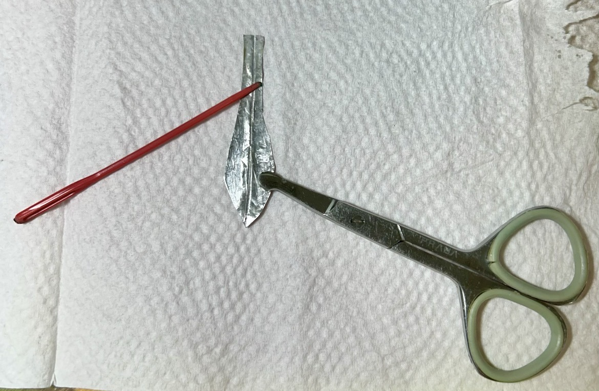
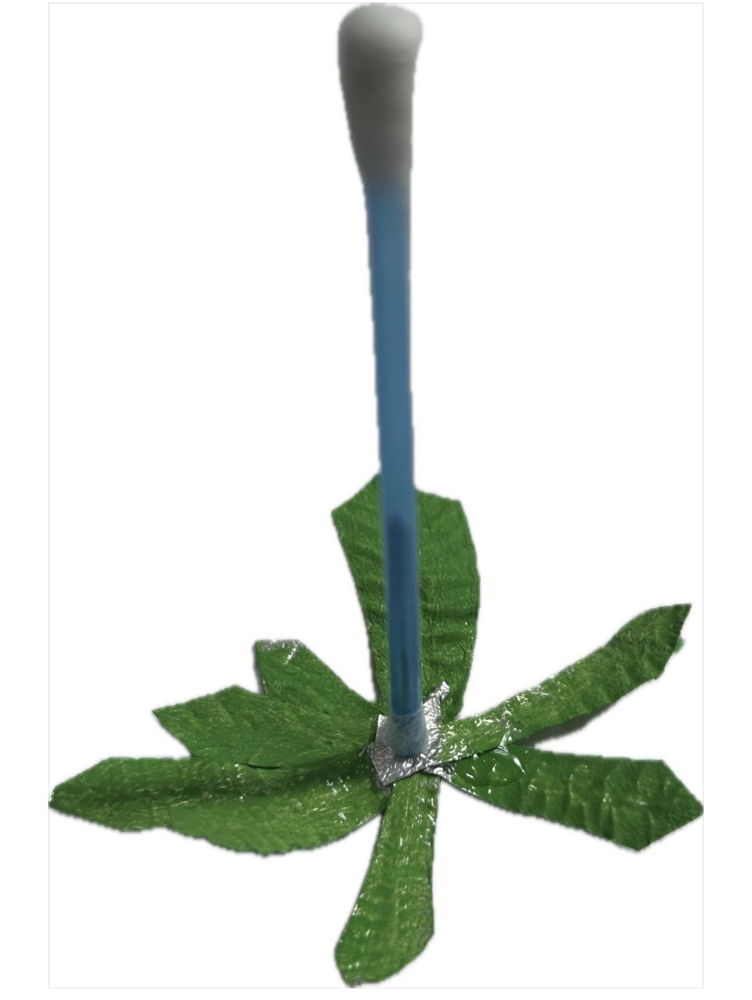
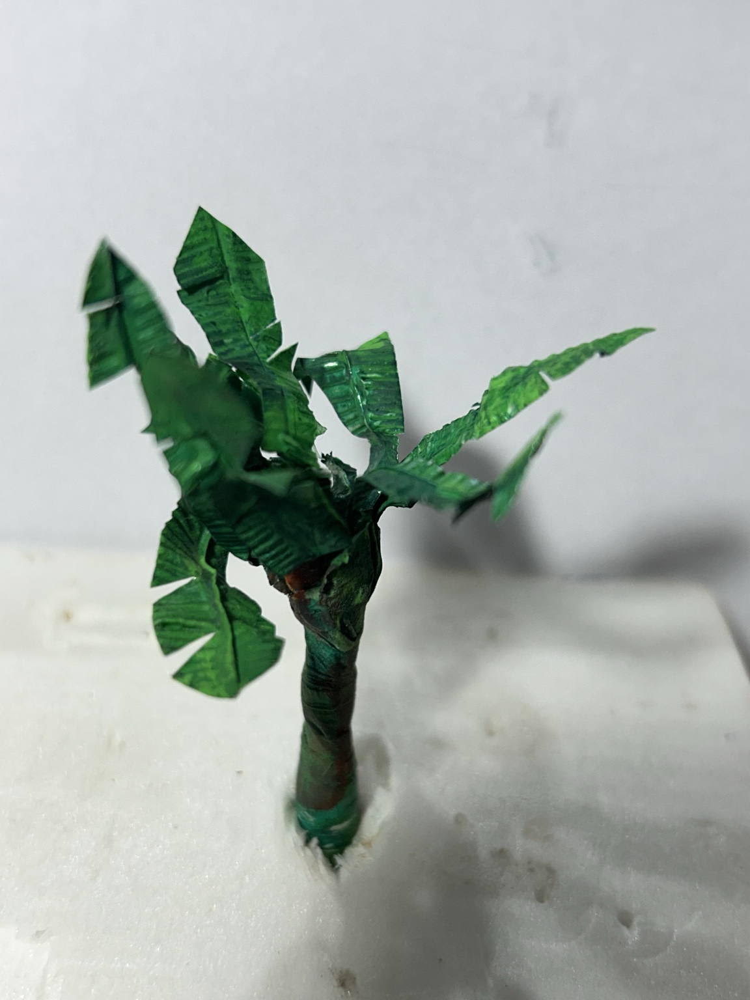
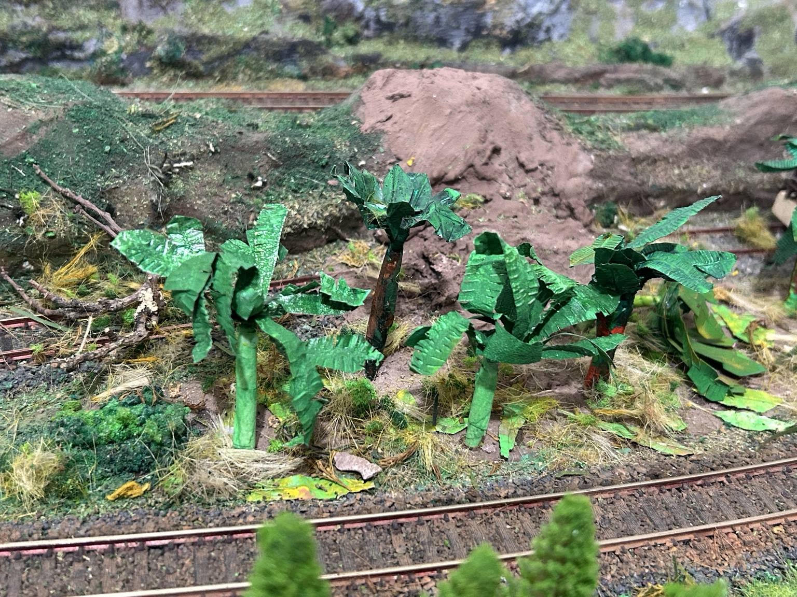

Como fazer bananeiras
Uma maneira simples de fazer bananeiras em escala HO é utilizar folha aluminizada para formar as folhas e uma haste de cotonete como estrutura central da planta. As folhas, o tronco e a posição de cada bananeira podem variar, deixando o conjunto mais natural.

Pinte a folha aluminizada dos dois lados com tinta Acrilex verde-clara, sem diluente, e depois fixe a pintura com verniz acrílico à base de água.
Corte as folhas com aproximadamente 0,5 a 1 cm de largura e 3 a 6 cm de comprimento. Alise cada peça, dobre-a ao meio para marcar a nervura central e faça os frisos com um palito sobre uma superfície macia, por exemplo, uma bandeja de isopor.
Faça também dois ou três pequenos picotes de cada lado da folha, imitando os rasgos naturais das folhas de bananeira.

Fure cada folha com um alfinete e vá montando o conjunto de cabeça para baixo ao redor da haste. Coloque cola no furo da haste e distribuia as folhas em diferentes direções.
Coloque cola no topo da montagem. Outra opção é cobrir a cabeça do alfinete com pequenos restos de folhas e depois aplicar a cola.

Faça o tronco envolvendo a haste com fita crepe. Pinte-o de verde e acrescente alguns riscos em tom de cobre.
Deixe a maioria das folhas maiores voltada para cima, procurando reproduzir a posição natural em direção à luz, e algumas folhas menores inclinadas para baixo.
Corte os troncos em diferentes comprimentos para que as bananeiras não fiquem todas com a mesma altura.

Fure o local escolhido na maquete e fixe cada bananeira com cola.
No terreno abaixo do bananal, espalhe algumas folhas soltas em tons amarelados e marrons, além de restos de grama e outros materiais, criando a aparência de vegetação seca e sujeira acumulada no solo. Está pronto o bananal.